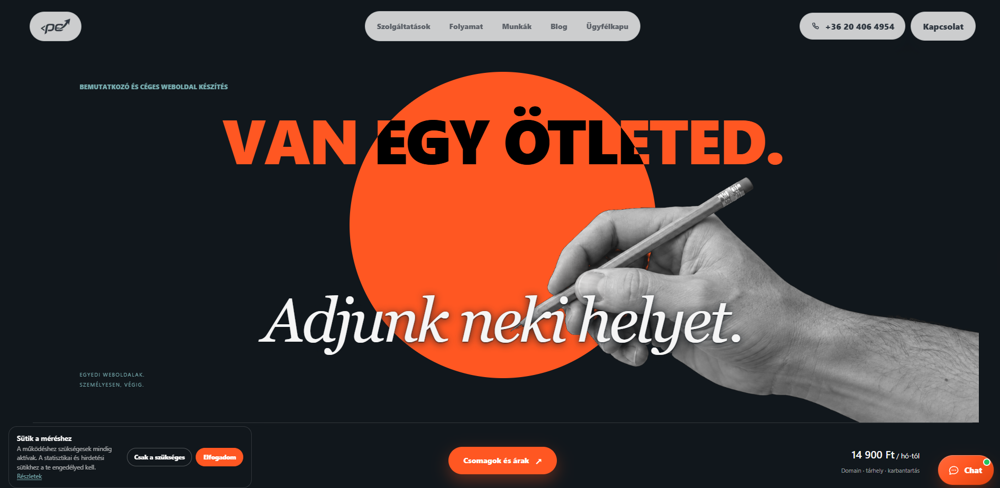
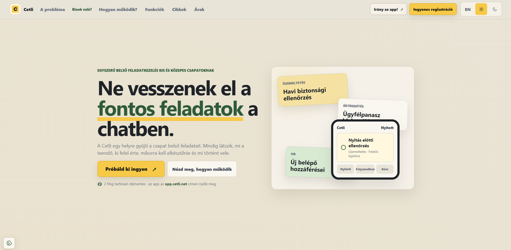
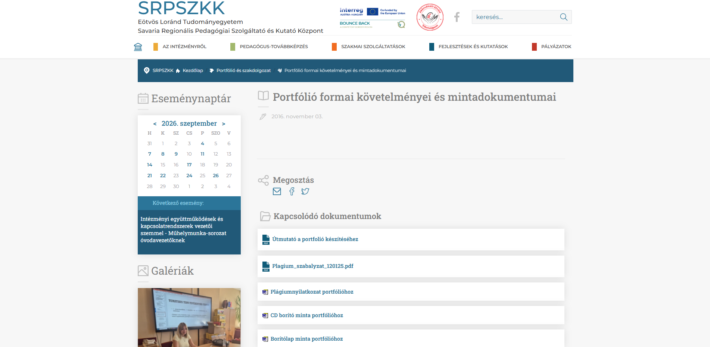

Bemutatkozás
Danics Ildikó vagyok, pályakezdő webfejlesztő.
Szeretek átlátható, gyors és felhasználóbarát weboldalakat készíteni.
Jelenleg a HTML, CSS, Python és Git használatát fejlesztem.
Célom, hogy folyamatos tanulással és gyakorlással modern, igényes webes projekteket hozzak létre.
Készségek
HTML5
CSS3
SQL
JavaScript alapok
Python
Git és GitHub
Projektek

Bemutatkozó weboldal
Egyszerű, reszponzív bemutatkozó weboldal HTML és CSS használatával.

Feladatkezelő terv
Áttekinthető feladatkezelő felület tervezése és elkészítése HTML és CSS segítségével.

Iskolai portfólió
Iskolai projektek és saját munkák bemutatására készített reszponzív portfólióoldal.
Kapcsolatok
- E-mail: anna.nagy@example.com
- Telefon: +36 30 123 4567
- Lakhely: Budapest